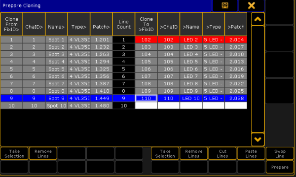
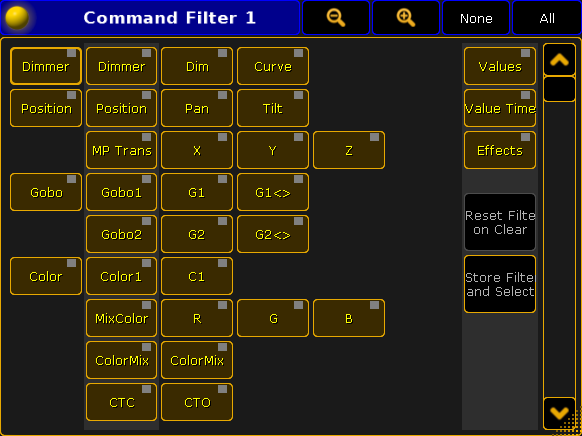

Important:
The source of the objects matches the destination of objects.
To select the source fixtures or fixture types click on Take Selection on the left side of the pop-up.
To apply the selected fixtures or fixture types to their destination click on Take Selection on the right side of the pop-up.
The button Remove Lines on the right and left removes selected lines of the corresponding side of the button.
Prepare cloning - remove lines
To activate the buttons Paste Lines and Swop Lines click on the button Cut Lines first.
To paste fixtures into another cell in the source click on the left side of the column and then click on the button Paste Lines. To paste fixtures into another cell in the destination click on the right side of the column and then click on Paste Lines.

Prepare cloning - paste lines
Click on Paste Lines once again to paste the fixture 102. Now, fixture 102 is located between fixtures 109 and 110.
- The data of source fixture 8 now corresponds to the destination fixture 102.
Prepare cloning - pasted line in the destination column
To swap a line click on Cut Lines first.
Then click on the fixture you would like to swap. Here it is fixture 110.
Click on the fixture you would like to swap fixture 110 with. Here it is 103, which is now marked in blue; fixture 110 is now marked in red.
Prepare cloning - swap lines
Fixture 110 and fixture 103 swapped places. Fixture 1 now has the data of destination fixture 110. Fixture 9 now has the data of destination fixture 103.
Prepare cloning - swapped lines
To complete the preparing process click on the button Prepare.
Cloning
If you click on the button Prepare, the pop-up Cloning opens.
Cloning pop-up
It is possible to address all elements by the buttons All Items To All, All Items To None, and All Items To Chosen.
Here you choose in which elements the fixtures you have assigned are cloned in:
Sequences
Groups
Presets
Worlds
Effects
Layouts
There is a swipe button for each of the elements containing the options:
No:
This element will not be cloned.
All:
Data will be cloned for all objects of this element.
Chosen:
This button activates the button Choose on the right of each element.
If you click on the button Choose, an additional window opens within the pop-up Cloning. Here it is the window Select Sequences.
Choose sequences to which you copy the objects first and then clone these objects.
The info column displays information on corresponding objects.
Hint:
It is also possible to select several cells in the column by holding the button CTRL on your keyboard while clicking on the cells you would like to select.
Cloning - select sequences
Important:
Using All Items To All, All Items To None, and All Items To Chosen deletes the previous selection.
All Items To All:
-Addresses all elements for cloning.
All Items To None:
-Does not clone in any of the elements.
Important:
However, you can use All Items To None to select single objects of single elements.
To clone single objects of a single element:
- Press All Items To None
This sets all elements to status "No"
- Swipe the element you would like to clone single objects in
- Click Chosen in the element you are in activating the button Choose on the right of the element
- Select single objects you would like to clone
All Items To Chosen:
Sets all elements to Chosen.
Important:
Clicking on All Items To Chosen allows you to select single objects in every element.
Set Filters
It is also possible to set filters in the window Cloning.
Set Pool Filter
Click on Pool Filter.
The window Select Filters appears on the right side of the pop-up Cloning.
Choose a filter by clicking on a cell.
To reset the filter click on Clear Selection in the upper right corner of the window Select Filters.
To perform cloning click on Clone in the lower right corner of the window Select Filters.
Hint:
It is also possible to set a filter via the Filter Pool. For more information see What are filters.
Window cloning - select filters
Set Command Filter
To open this filter click on Command Filter and the window Add Filter 1 opens.

Command filter window
Important:
This is a temporary filter which displays current filtering and allows you to create temporary modifications. However, if you would like to set several filters use the Pool Filter.
For more information on how to use the Command Filter see Create filters.
How to Perform Cloning
After preparing and setting filters for the cloning process perform cloning by clicking on Clone.
The pop-up Please Confirm appears displaying four options:
Cancel:
Choosing this option cancels cloning and returns to the pop-up Cloning.
Low Prio Merge:
Choosing this option generates simple cloning with low priority. Here, values of source objects are cloned to the destination with no existing data only. No data will be overwritten or deleted.
Merge:
Choosing this option merges values from source objects with values from destination objects overwriting existing values. Values which are only located in the destination objects will not be overwritten.
Overwrite:
Choosing this option overwrites all values of the destination objects with existing and non-existing values in the source objects.